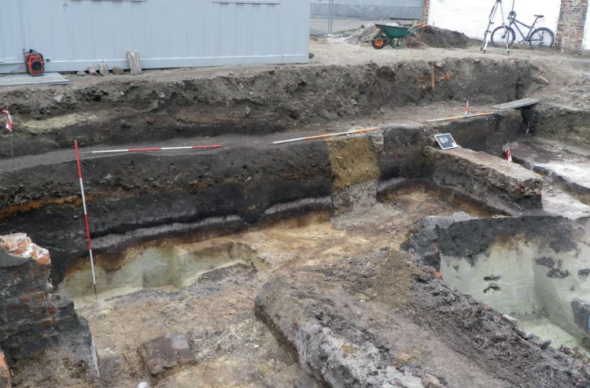
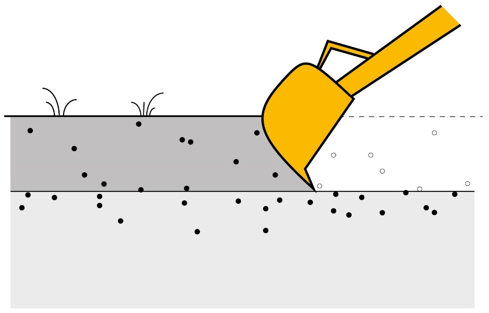
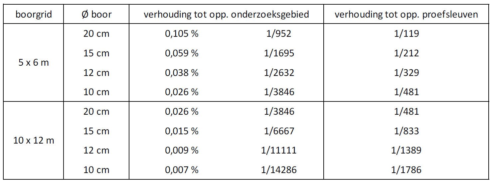
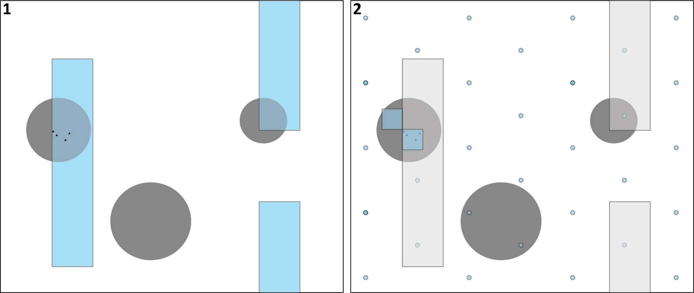

6 Fasering
6.1 Fasering van steentijdonderzoek
Onderzoek van steentijd artefactensites wordt opgebouwd door verschillende fasen. Deze onderscheiden zich van elkaar en volgen elkaar logisch op volgens hun primaire doelstellingen/onderzoeksvragen:
bureauonderzoek: onderzoeken of en waar sites aanwezig kunnen zijn;
landschappelijk bodemonderzoek: op het terrein onderzoeken of en waar sites aanwezig kunnen zijn;
prospectie: onderzoeken of en waar sites effectief aanwezig zijn;
waardering: onderzoeken of aanwezige sites opgravingswaardig zijn;
opgraving: vlakdekkend onderzoek van waardevolle archeologie.
Deze fasering is gericht op selectiviteit: met een minimale inspanning/kost een maximaal resultaat bekomen. De resultaten van elke fase worden immers gebruikt om gefundeerde keuzes te maken over de noodzaak van de volgende fase(n). Bij negatief resultaat van een fase worden de volgende fasen niet meer uitgevoerd, en bij negatief resultaat in delen van een onderzoeksgebied kan de volgende fase vaak beperkt worden tot de rest van het onderzoeksgebied1. Je gebruikt bovendien de resultaten van elke fase om de meest efficiënte methodiek en strategie te bepalen voor de volgende fase.
Bij academisch onderzoek van niet-bedreigde sites kan je soms flexibel heen en weer schakelen tussen verschillende fasen en kunnen ze deel uitmaken van één (terrein)campagne. In een preventieve context worden de verschillende fasen meestal strakker gescheiden, vaak met een terreincampagne en rapportage per fase.
Deze opeenvolging van een reeks fasen die misschien wel of niet moeten uitgevoerd worden, vaak nog naast apart (proefsleuven)onderzoek naar recentere archeologie, kan onduidelijk en verwarrend overkomen voor opdrachtgevers van preventief archeologisch onderzoek. Soms krijgen ze onterecht het gevoel dat elke fase een bijkomende kost en vertraging vormt, terwijl de fasering net de kosten minimaliseert door onnodige fasen te elimineren en het onderzoek te beperken tot de relevante oppervlakte. Het is daarom belangrijk om reeds bij aanvang van een project de fasering en het waarom erachter goed te duiden bij de opdrachtgever.
6.2 Fasering tegenover ander archeologisch onderzoek
De fasering van terreinwerk is altijd gericht op minimale verstoring. Vaak is er niet enkel een verwachting naar steentijd artefactensites, maar ook naar andere perioden met grondsporen, muurresten enz. Dit vereist verschillende prospectiemethoden, die een verschillende verstoringsgraad inhouden. Archeologische boringen en proefputten in functie van steentijdsites verstoren de bodem slechts in beperkte mate, terwijl proefsleuven steentijd artefactensites sterk kunnen beschadigen of vernielen.
Daarom moet boor- en/of proefputtenonderzoek steeds vóór proefsleuvenonderzoek plaatsvinden. Dit geldt voor zowel archeologische boringen als proefputten. Zones die steentijdsites bevatten worden gevrijwaard voor opgraving door deze niet te proefsleuven.
Hier kan alleen van afgeweken worden wanneer het niveau dat steentijdsites bevat zich dieper bevindt dan de recentere archeologische resten en niet door het onderzoek daarvan verstoord wordt.
Bij proefputtenonderzoek en opgraving van steentijdsites moet steeds aandacht gaan naar de eventuele aanwezigheid van recentere archeologie en bodemsporen (zie 5.2.2.2.8).
6.3 Steentijd in andere fasen
6.3.1 Onverwachte (paleo)bodems in proefsleuven en opgravingen
Het is niet ongewoon dat niveaus die steentijdsites kunnen bevatten zoals afgedekte bodems soms ‘onverwacht’ worden aangetroffen in proefsleuven en opgravingen van recentere archeologie (fig. 6.1). Veel aardkundige fenomenen kunnen immers moeilijk zichtbaar of interpreteerbaar zijn bij landschappelijk bodemonderzoek, en vooral bij boringen. Laatglaciale paleobodems tekenen zich bijvoorbeeld vaak eerder vaag af in de bodem, terwijl hun aanwezigheid wel uiterst relevant is voor vooronderzoek naar steentijdsites (zie 2.4.1.3.4). Bovendien wordt landschappelijk bodemonderzoek meestal in een relatief breed grid uitgevoerd, waardoor kleinere zones met bijvoorbeeld goede bodembewaring gemist kunnen worden. Ook wordt een landschappelijk bodemonderzoek niet voorafgaand aan elk proefsleuvenonderzoek uitgevoerd, maar alleen bij een zekere verwachting naar steentijdarcheologie of soms om eventuele recente bodemverstoring vast te stellen (zie 3.1).

Wanneer je onverwacht een dergelijk niveau aantreft, heb je in feite een waarneming gedaan die gelijkstaat aan een landschappelijk bodemonderzoek. Je rondt dat landschappelijk bodemonderzoek dan ook af volgens de voorschriften van de CGP, bijvoorbeeld door het grondig registreren en beschrijven van typeprofielen. Hierbij overweeg je niet alleen de relevantie voor de recentere archeologie maar ook voor mogelijke steentijdsites, in functie van een afweging van eventueel verder vooronderzoek daarnaar. Bovendien is deze waarneming van belang voor de verwachting naar steentijd in de omgeving, ook als geen steentijdsites worden aangetroffen binnen jouw onderzoeksgebied.
Tegelijkertijd herevalueer je de archeologische verwachting naar steentijdarcheologie.
Was bijvoorbeeld de oorspronkelijk negatieve verwachting gebaseerd op de (waarschijnlijke) afwezigheid van een voor steentijd relevant niveau, of slechte bewaring daarvan? Dan moet die verwachting bijgesteld worden op basis van het waargenomen niveau, en stelt zich de vraag of er zich steentijdsites in bevinden. Daarvoor organiseer je dan best steentijd-gericht vooronderzoek: prospectie, eventueel gevolgd door waardering en opgraving. Daarvoor gebruik je de methoden uit dit afwegingskader.
6.3.2 Onverwachte steentijdvondsten in proefsleuven en opgravingen
Proefsleuvenonderzoek is in de eerste plaats gericht op het opsporen van sites met grondsporen, maar ook steentijd artefactensites kunnen gedetecteerd worden in proefsleuven. Het wegnemen van een deel van de bodem en het aanleggen van een opgravingsvlak kan namelijk een steentijd artefactensite horizontaal doorsnijden. Artefacten kunnen zowel tijdens het kraanwerk als bij opschonen van het vlak waargenomen worden.
De waarnemingstechniek is veel minder performant dan het zeven van sediment, zoals bij archeologisch booronderzoek of proefputten in functie van steentijdsites. Kleinere artefacten worden daarom gemakkelijk gemist. Bovendien wordt niet de volledige dikte van het archeologische niveau bekeken, maar alleen één horizontale snede hierin (fig. 6.2).

De oppervlakte die bij proefsleuvenonderzoek wordt onderzocht is echter ongeveer 120 tot 1750 keer groter dan bij archeologisch booronderzoek (fig. 6.3). Als deze oppervlakte volledig opgeschaafd en grondig geïnspecteerd wordt met oog voor lithische artefacten door mensen met ervaring hierin, kan dit de gebrekkige waarnemingstechniek enigszins compenseren. Indien concentraties lithische artefacten doorsneden worden bij proefsleuvenonderzoek kunnen ze daarom soms opspoorbaar zijn.

Proefsleuvenonderzoek is echter geen goede standaardtechniek voor prospectie naar steentijd artefactensites.
Het grote nadeel van proefsleuvenonderzoek situeert zich in het verwijderen van een deel van de bodem. Een steentijd artefactensite kan namelijk enkel horizontaal doorsneden worden door de top van de site af te graven, wat de site steeds beschadigt (fig. 6.2). Dit vormt een ernstige beschadiging, omdat de graad van volledigheid van het ensemble een belangrijk waarde-criterium vormt voor steentijd artefactensites.
Bovendien blijft onbekend hoeveel van het ensemble precies werd verwijderd. Dit maakt een precieze waardering van het onderzoekspotentieel van de site moeilijk tot onmogelijk. Eventueel kan de site buiten de proefsleuven verder gewaardeerd worden. Maar dit is alleen mogelijk indien een deel van de site zich ook buiten de proefsleuven bevindt, wat voor de aanvang van de prospectie onmogelijk kan ingeschat worden. Daarom is in de prospectiefase ook het verwijderen van een eerder verstoorde aardkundige eenheid, zoals een ploeglaag, niet wenselijk als deze een deel van een steentijd artefactensite kan bevatten (zie 4.2.2.4.5).
De voorkeur moet dus steeds uitgaan naar andere technieken: archeologisch booronderzoek of proefputten in functie van steentijd artefactensites.
Toch is bij elk proefsleuvenonderzoek en elke opgraving aandacht voor steentijd artefactensites vereist.
Op steentijd gerichte prospectietechnieken worden in de huidige praktijk alleen toegepast bij een zekere verwachting naar steentijdsites. Bovendien zijn ze weinig effectief voor het vinden van kleine en/of weinig dense sites (zie 2.3 en 4.2.2.3). Ook bij een perfecte uitvoering kunnen prospectie en waardering dus dergelijke sites missen. Deze ‘onverwachte’ sites zijn nochtans essentieel om mogelijke cirkelredeneringen rond archeologische verwachting te doorbreken en vertegenwoordigen dan ook een uiterst hoge informatiewaarde. Proefsleuvenonderzoek en opgraving van recentere archeologie biedt een extra kans om ze op te sporen (fig. 6.4: 1).
Daarom moet je altijd tot aangepast waarderingsonderzoek overgaan als lithische artefacten of andere indicatoren voor de aanwezigheid van een steentijdsite worden aangetroffen bij een proefsleuvenonderzoek of opgraving. Wanneer je vondsten aantreft, heb je immers de facto een positieve prospectie uitgevoerd, en moet je verder onderzoeken wat de betekenis en waarde van die vondsten zijn. De stratigrafische positie en bodembewaring is vaak al duidelijk vanuit het proefsleuvenonderzoek, maar voor andere waarderingsvragen zoals artefactdensiteit zet je een aangepaste methode in, namelijk proefputtenonderzoek (zie 5.2). Je richt je daarbij in de eerste plaats op de vondstlocatie in de proefsleuf/opgravingsput. Omdat op die plaats een deel van de stratigrafie en de site verwijderd werd, is het vaak ook zinvol om waarnemingen te doen buiten de proefsleuf of opgravingsput (fig. 6.4: 2).
Bovendien is het nodig om de rest van het onderzoeksgebied verder te prospecteren. De archeologische verwachting voor steentijd vondstenconcentraties is nu immers veel hoger door de ‘onverwachte’ vondst. Dit gebeurt meestal best zowel binnen als buiten de proefsleuven. Buiten de proefsleuven werd nog niet gezocht naar vondstenconcentraties, maar ook in de proefsleuven kunnen concentraties gemist zijn, bijvoorbeeld indien het opgravingsvlak het steentijdniveau niet overal heeft doorsneden. Voor de verdere prospectie moeten aangepaste technieken ingezet worden: archeologische boringen of proefputten (fig. 6.4: 2; zie 4.2).

Opgelet: een negatief resultaat betekent niet dat de aanwezigheid van steentijd artefactensites helemaal is uitgesloten (zie 6.3).↩︎